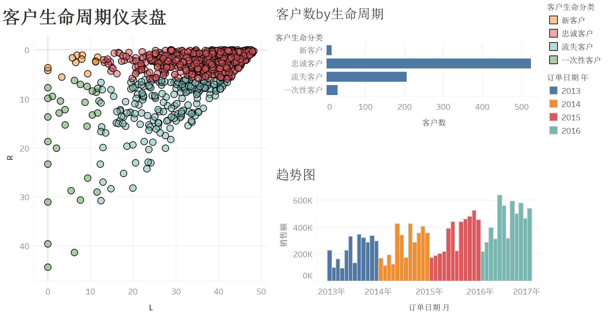

Projects
Classification on EEG Data using Neural Networks
In this project, we used three different architectures to classify EEG data in Keras, including a 1) convolutional neural network (CNN), 2) a recurrent neural network (RNN) and 3) a convolutional recurent neural network (CRNN). AlexNet is used for the convolutional parts, and LSTM and GRU are used for the recurrent parts. All three models achieved a testing accuracy of 67% after fine-tuning.

客户价值模型
根据客户超市购买记录对用户类型进行分类，制作客户生命周期模型，RFM产品和地区的客户价值模型，新用户留存率模型，并对客户生命周期模型和RFM类型的优缺点进行比较。
Experience
国际商业机器(中国)投资有限公司
内容设计师
2019年4月 – 至今
- 负责Enterprise COBOL和Pyton 产品文档的维护与定期更新工作，制作新版本相关的视频材料，收集客户对于产品的反馈，使用Hotjar和Google Analytics对内容访问数据进行收集和分析。
- 负责COBOL Migraiton Portal的基于Carbon Design Language的前端开发工作。
- 组织并规划搜索引擎优化(SEO)学习小组成员定期学习SEO相关的理论基础知识，并结合相关产品内容实践。有效提升产品新内容排名，提升用户搜索效率。
- 组织定制化的企业级设计思维工作坊 (EDT Workshop)，协助咨询团队和企业客户一起，挖掘客户痛点，对用户需求分类，排优先级，最终交付用户分析报告帮助咨询团队更好的了解用户需求。